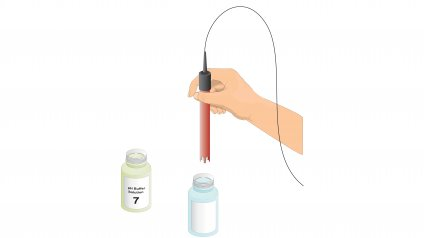

The soil pH is a measure of the acidity or basicity in soils. pH is defined as the negative logarithm (base 10) of the activity of hydrogen ions(H+) in solution. It ranges from 0 to 14, with 7 being neutral. A pH below 7 is acidic and above 7 is basic. Soil pH is considered a master variable in soils as it controls many chemical processes that take place.

The pH soil test is an in-situ geotechnical testing methods used to estimate the undrained ph of soil. The test is relatively simple, quick, and provides a cost-effective way of estimating the soil ph.
Soil pH Data from pHScan
The pH test value in this procedure is accurate to ±0.5 pH or better (usually ±0.2 pH). The soil sample preparation and test procedure is adapted from accepted laboratory methods. Soil pH testing in the field gives small differences between tests. Using the 0.1 pH resolution pH Scan 1 minimizes these differences. Most soil pH measurement cannot achieve ±0.1 pH accuracy, even with elaborate laboratory procedures and expensive pH instruments. Usually, soil pH data for many applications do not require testing for better accuracy than a few tenths of a pH or ±0.5 pH in some instances. pHScan 1 easily meets requirements for soil pH testing, and is very economical to use in places where many samples and tests are taken.
Recommendations for Best Results
Prepare and run at least three tests of the same soil sample to confirm results. Minor (< ±0.5 pH) or no differences between readings indicate good technique and high confidence in results. Larger differences (> ±0.5 pH) require more testing and consulting with the authorizes mentioned above. Compare your test results with secondary soil pH references available from these test authorities. Confirm good technique and accuracy of your test results with these agencies.

To determine the pH of a given soil specimen.


- Scoop up loose soil samples with a clean, dry plastic jar. Avoid touching the soil with your hands to prevent contaminating the sample.
- Remove any stones and crush any clumps of soil to prevent breaking the delicate pH Scan glass electrode bulb.
- Fill up your sample soil up to 3/4 and add distilled water to the jar. Cap the jar tight and shake it vigorously a few times. Let the mixed sample stand for 5-10 minutes to dissolve the salts in the soil.
- Calibrate the pH meter using standard buffer solution according to the instruction manual provided a particular instrument by the manufacturer. The buffer solution also should be prepared according to the instructions provided with it. Use the buffer solution of pH near to the expected pH value of the soil suspension
- Prepare to log your test result in your data book for later reference.
- Remove the caps of the jar and your pH Scan. Dip the pHScan electrode into the wet soil slurry and turn the tester on. Take the reading when it stabilizes.
- Press HOLD button to freeze the displayed pH measurement. Record the pH reading in your data book.
- Press HOLD button again to release the reading.
- Rinse your pHScan tester in clean water between each use.